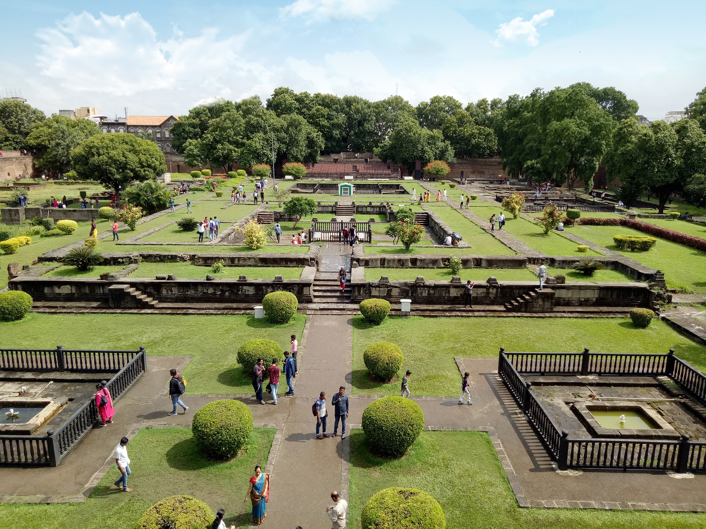

Image of maharashtra
Maharashtra is India’s third-largest state by area spread over 307,713 km2 (118,809 sq mi). It is surrounded by the Arabian Sea to the west, the Indian states of Karnataka and Goa to the south, Telangana to the southeast and Chhattisgarh to the east, Madhya Pradesh and Gujarat to the north, and the Indian union territory of Dadra and Nagar Haveli to the northwest.
More about maharashtra
Maharashtra was formed on 1 May 1960 by splitting the bilingual Bombay State, which had existed since 1956, into majority Marathi-speaking Maharashtra and Gujarati-speaking Gujarat, respectively.
more about maharashtra then clink on
Image of mumbai
Mumbai (formerly called Bombay) is a densely populated city on India’s west coast. A financial center, it's India's largest city. On the Mumbai Harbour waterfront st ands the iconic Gateway of India stone arch, built by the British Raj in 1924. Off shore, nearbyElephanta Island holds ancient cave temples dedicated to the Hindu go d Shiva.
Image of pune

Pune is a sprawling city in the western Indian state of Maharashtra. It was once the base of the Peshwas (prime ministers) of the Maratha Empire, which lasted from 1674 to 1818.It's known for the grand Aga Khan Palace, built in 1892 and now a memorial to Mahatma Gandhi, whose ashes are preserved in the garden.